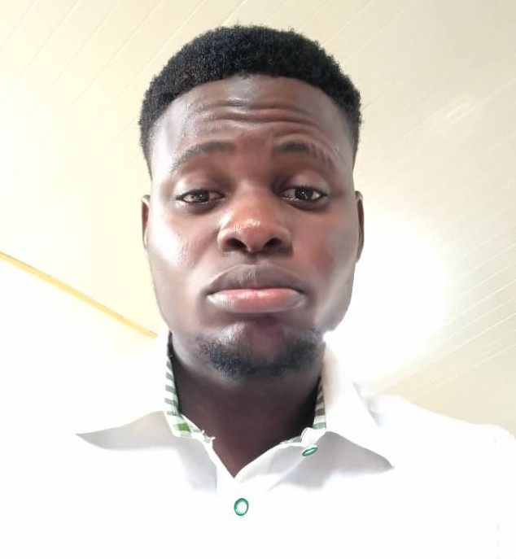

Wisdom David | WDD 130

Hello! My name is Wisdom David and I am from Akwa Ibom State, Nigeria. I enjoy exploring new technologies,
gaming,
I am a software development student of BYU-Idaho.
I am a crypto newbie, who is trying to make a difference
there are few challenges with crypto market in Nigeria due to unstable currency price.